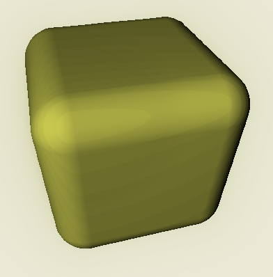
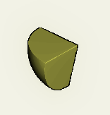

Introduction to Ray Marching
by Dalton Britton
Introduction to Ray Tracing
Ray Tracing, like Ray Marching, is a common rendering method used to
realistically simulate light. Ray Tracing works by casting rays out from
the camera then calculating intersection points between the ray and
typically triangles. Note: Ray Tracing is not required to work with
triangles
Example of ray tracing below by
marczych:

Introduction to Raymarching
Ray Marching, like Ray Tracing, uses rays to simulate light. The main difference between Ray Tracing and Ray Marching, is how the intersections are calculated. Ray Tracing calculates the intersection of a ray with a triangle, while Ray Marching calculates
the distance to the nearest point on all objects in a scene. Ray Marching calculates the distance by using a signed distance function(SDF). Finally Ray Marching repeatedly marches along the ray until the distance is below some threshold,
which it considers a intersection.
Example of marching along a ray:
Benefits of Raymarching
Beveled edges
The SDF returns the distance to the closest point on the surface of an object. A simple way to add a Bevel to an object is to expand an object‘s borders. Any faces on an object will expand outwards but remain relatively unchanged, while corners and edges will become rounded as a result. You're effectively tricking the SDF into thinking the boundaries of an object are closer than in reality. This simply means to expand an object you take that object‘s signed distance function and subtract the desired bevel radius.

Boolean Operations
Union
The Union Boolean operator is arguably the simplest of the three main operators. The Union operator simply merges two objects by taking the min of the object�s distance functions. In short this means it takes the safest distance as to not over march. There are other more complex operations to smooth the transition between objects, for more information see https://iquilezles.org.
Intersection
The Intersection operator outputs the shape of the intersection of two objects. Intersection is just the opposite of the Union operator. Instead of taking the min of the object‘s distance functions, instead we take the max.

Subtraction
Subtraction like the name suggests cuts out one object from the other. It is slightly more complex than Intersection or Union but not by much. First we invert the object we want to subtract by flipping the sign of its distance function. Inverting the distance function turns the object inside out, all points within the object are now outside, creating a hole where the old object was. Finally taking the Intersection between the original object and the inverted object result in the inverted object being subtracted from the original.
Spherical Worlds
Spherical Worlds are the simplest and easiest to use of the non-Euclidean transformation. In this case a spherical world just means a world in which repeats infinitely over some period. Since all signed distance functions all take in at least a point in space to calculate the distance from, we can manipulate the point before sending it to the SDF. For example, by subtracting one to the y component of the point we can effectively translate the object one unit up in space. Creating Spherical worlds is as simple as forcing the point to stay within some bounds without changing or manipulating distances calculated by the SDF. A point with a distance to point b must have the same "distance" after the manipulation. The simplest way to do this is to take the modulo of a point and the desired world size.
Note: Render Circle World
Space Folding
Folding space duplicates objects across a plane. This effectively creates an infinitely long and tall mirror within a scene, but with some key differences. Difference #1: Mirrors cannot only reflect once, two mirrors pointing at each other will not create infinite objects they will instead usually only create 2n objects where n is the number of mirrors. DIfference #2: Any part of an object behind a mirror will be deleted. Difference #3: Rays do not calculate intersections with the mirror/fold. Difference #4: Rays do not change direction when they pass through a mirror. These differences may seem extreme but they are perfect for creating complex objects. Specifically difference #2, the ability to create an exponential number of objects with a linear number of operations.
There are two main ways to fold space. Both methods use, like spherical worlds, the manipulation of the SDF's input point. The first and most simple way is to take the absolute value one or more axis of the input point p. For example taking the absolute value of the x component of p maps (-x,y,z) to (x, y, z) where x<0. This effectively tricks the SDF into thinking two or more distinct points are the same. The only problem with this method of folding space is that you can only apply this on one or more of the three major axis. The solution is much more complicated, one implementation by AndyAlias, creates a fold where n1 is the normal of the plane:
Download Demo
Limitations
Near-Misses
Problem:
Unfortunately calculating the intersection of objects where rays travel nearly parallel to an object takes 1 ⁄ x steps to cover a distance of 1, where x is the distance from the object. When looking at objects taking up little of the screen we can brute force until we meet our max render distance but this is not always feasible.
Example:
Solutions:
Limiting the number of steps of the Ray Marching is a crude but necessary solution. But using a limited number of steps introduces a new very serious problem, the render has holes where rays couldn‘t reach a surface or the max render distance. All subsequent solutions are an attempt to fix this problem by approximating the missing information.
Solution #1: Global Illumination
One way we can approximate the missing information is by adding shading. Light traveling through tight spaces is typically darker than light around a hole. Luckily our distance function retrieves global information, so we can darken a pixel if the distance to an object is less than some threshold.
Solution #2: Color Blending
Every time we call our distance function it retrieves information from the nearest point on an object in a scene. As part of this information we can have it return the expected color at that point. Using the exponential average equation, An = An-1 * m + v (1 - m) where v is the current color and 1⁄m is the steps to average, we can calculate blend nearby colors into the pixel. This can also be used to slightly counteract aliasing.
Solution #3: Expanding borders
The problem occurs because the ray is having trouble reaching the object, we can help it out by expanding the borders out to meet the ray as the ray travels a farther distance. To do this we can continuously slightly expand our borders (as explained above in Bevels) with each step we take.